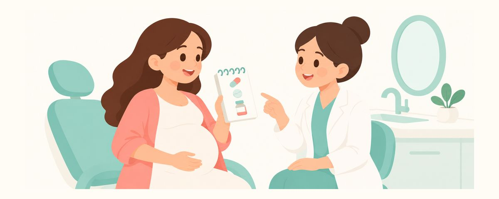

孕期牙科用药，这几点一定要知道：需要避开的抗生素和止痛药
孕期可以使用的牙科药物很多，但有几种一定要避开。这篇文章讲讲可能让宝宝牙齿变色的抗生素、选择止痛药的原则，以及开药时需要告诉医生的事。
要点速览
- 四环素类抗生素不能用
- 牙疼时，通常首选对乙酰氨基酚
- 从20周起，避免使用布洛芬等非甾体抗炎药
怀孕期间牙疼，首先担心的就是能不能吃药。于是有人忍着疼，也有人反过来直接吃家里现有的药。下面整理了孕期牙科用药一定要知道的原则，以及开药时需要告诉医生什么。
需要避开的药只有几种
牙科常用的药物中，很多在孕期都可以使用。不过有几种一定要避开，所以无论什么药，原则都是先告诉医生您怀孕了，再开药。
四环素类抗生素孕期不使用，包括四环素、多西环素、米诺环素。肚子里宝宝的牙齿从孕早期就开始形成，这类药物会掺进正在形成的牙齿里，可能让宝宝的牙齿变成黄色或灰色。一旦变色，牙齿长好以后也会一直留着。
止痛药方面，牙科通常首先考虑对乙酰氨基酚。吃多少、吃几天，按医生的指示就好。
布洛芬等非甾体抗炎药，建议从怀孕20周以后避免使用。即使是家里常备、一直在吃的药，孕期也最好不要自行服用。
需要抗生素时，由牙医和产科医生商量决定。用哪种药，要综合考虑炎症程度、怀孕周数和妈妈的身体状况。
很多人以为“孕期什么药都不能吃”。但关键在于避开该避开的药，把需要的药用对。炎症和疼痛长期不管，对妈妈的身体也是负担。
开药时，这样做
在诊室里，只要记住这个顺序：
- 就诊前先说明您正在怀孕，以及怀孕几周了。
- 把正在服用的药物和营养补充剂都告诉医生。把清单记在手机里会很方便。
- 想知道开的药孕期能不能用，当场就问。
- 按医生说明的剂量和疗程服用。
- 把同一份清单也告诉产科医生，让两边掌握同样的信息。
准妈妈们常犯的错误有这么几个：
- 担心吃药，就忍着疼：病因不处理，炎症会扩大，最后可能需要更多的药和治疗。
- 开的抗生素吃了几天症状好转，就自己停药：医生开的药不要自行停用，有顾虑请和开药的医生商量。
- 家里的止痛药或感冒药不确认就吃：复方药物里可能含有非甾体抗炎药。告诉药师您怀孕了，请药师确认。
常见问题
不知道怀孕时吃了药，怎么办？
与其一个人担心，不如把吃过的药名和时间记下来，告诉产科医生并商量。吃了什么药、什么时候吃的，判断都不一样，和专业人士聊是最准确的。
牙科的麻醉药也要避开吗？
牙科使用的局部麻醉，孕期也可以用。打了麻醉舒舒服服地治疗，比忍着疼对妈妈身体的负担更小。
先靠止痛药撑着，生完孩子再治疗不行吗？
如果疼到需要吃止痛药，治疗病因更安全。比起长期吃药，在牙科把病因解决掉，对妈妈和宝宝都更好。
担心宝宝的牙齿变色，抗生素都很危险吗？
不是的。因为宝宝牙齿变色而需要避开的，是四环素类抗生素。其他抗生素在需要时，由牙医和产科医生商量选择。
产后哺乳期也要注意吗？
哺乳期也可以接受牙科治疗和局部麻醉。就诊和开药前告诉医生您在哺乳，医生会据此选药。
出现这些情况，请看牙医
- 牙疼到想吃止痛药
- 牙疼得睡不好或吃不下饭
- 牙龈或脸肿起来
- 吃了开的药，疼痛或肿胀还是没有好转
- 吃药后身体出现异常反应（也请告诉产科医生）
在合适的时候收到提醒
在牙齿日历应用中输入孩子的出生日期（或预产期），这些文章就会在需要的时候以提醒的形式送达。免费使用，无需注册。
参考来源
- ACOG · Committee Opinion No. 569: Oral Health Care During Pregnancy and Through the Lifespan (2013)
- FDA · Medicine and Pregnancy (2023)
本应用中的信息仅供一般科普教育之用，不能替代专业的牙科诊疗。关于孩子的具体情况，请咨询牙医。